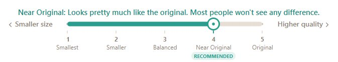

Drop photos in, get much smaller ones back. You pick the quality in plain words, it finds the smallest file that still looks right.
Free does 10 photos a day, whole batches included, no account. Windows · macOS · Linux.
JPG, PNG, WebP, HEIC from iPhones, and camera RAW files from about a thousand different cameras.
Same idea as Video Squisher: say how the photo should look and it finds the smallest file that passes. No quality sliders with mysterious percentages.
Default output is small modern files. Flip "more compatible" and you get plain JPG or PNG that opens on literally anything.
If a photo can't be made smaller without looking worse, it tells you and leaves it alone.
Optional: strip the personal data (camera, GPS, timestamps) out of the copies while squishing. Transparency is preserved too.
No uploads, no accounts, no telemetry. Photos never leave your computer.

| Free | Pro - $9 once | |
|---|---|---|
| Photos per day | 10 | Unlimited |
| Whole batches | ✓ | ✓ |
| Watch folder | ✓ | |
| Custom output names | ✓ | |
| Everything else (quality engine, formats) | ✓ | ✓ |
One purchase, yours forever. No subscription.